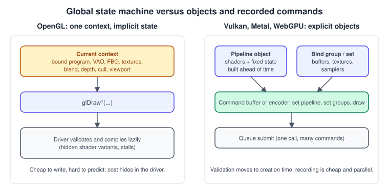
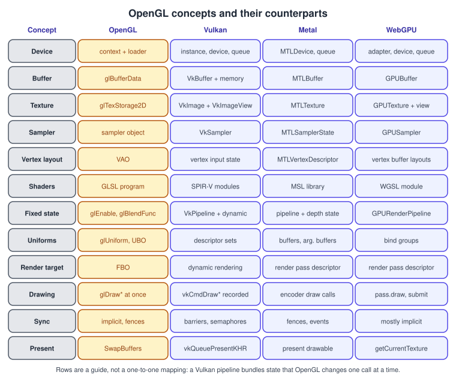
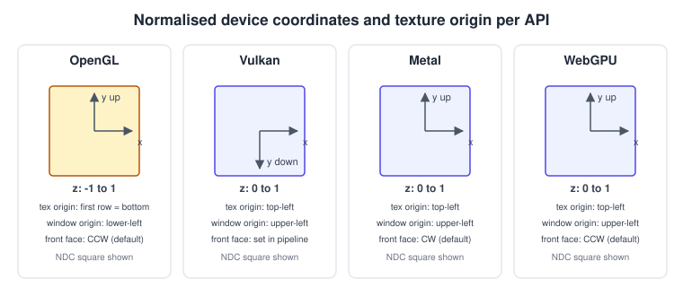
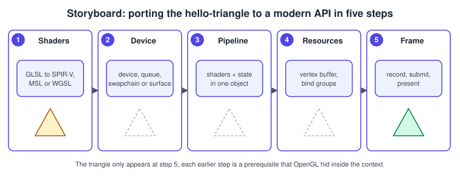

Porting from OpenGL to Vulkan, Metal and WebGPU
|
This content was generated with the assistance of AI and should be verified against the official documentation before being relied on in production. |
Moving an OpenGL renderer to Vulkan, Metal or WebGPU is less a translation of function calls than a change of where the work happens. OpenGL keeps a global state machine in a driver that guesses what you want; the newer APIs ask you to describe the work up front, in objects, and then record commands that are cheap to submit. The same ideas are present in every API (a buffer is still a buffer) but they sit in different places. This page maps each OpenGL concept to its counterpart, shows the coordinate and layout conventions that silently break ports, and walks through the same triangle in each API.
The facts were checked in November 2026. The versions compared are OpenGL 4.6 with GLSL 4.60 as the starting point, and, as destinations, Vulkan 1.4, Metal (including the Metal 4 interfaces) with MSL, and WebGPU (a W3C Candidate Recommendation Draft) with WGSL. Code needs a C++20 toolchain with the Vulkan SDK for the Vulkan part, Xcode and Swift for the Metal part and a browser with WebGPU for the WebGPU part. This page maps concepts and does not document the destination APIs in full; each has its own sub-section on this site. It builds on Explicit vs Implicit APIs, The Rendering Pipeline and Shading Languages Landscape, and continues the Bookshelf example by porting its first step, the triangle, from Hello Triangle.
First decide whether to port
Porting is a large investment, and the most useful question is whether you need to do it at all.
Translation layers let you ship while you rewrite: ANGLE implements OpenGL ES on top of Direct3D, Vulkan, desktop GL and Metal; Mesa’s Zink implements OpenGL on top of Vulkan; MoltenVK implements Vulkan on top of Metal; Dawn and wgpu implement WebGPU on top of the native APIs. They are described in Cross-Platform Translation Layers and in the OpenGL in 2026 page of this section. They cost performance and sometimes feature coverage, and they are a bridge, not a goal.
The change in mental model

Four differences account for most of the work:
-
State lives in objects, not in the context. In OpenGL,
glEnable(GL_BLEND),glBlendFunc,glUseProgramandglBindVertexArraychange one global piece of state each. In Vulkan, Metal and WebGPU the shaders, vertex layout, blending, depth test, culling and the attachment formats are baked into one pipeline object that you create before drawing. Changing blend mode means switching pipeline objects. Create them at load time; creating one mid-frame can cause a stutter. -
Commands are recorded, then submitted. A draw call does not run when you make it. You record it into a command buffer or encoder, and the work starts when the recording is submitted to a queue. Several threads can record at once.
-
Resources have a declared usage and layout. A buffer is created for vertex, uniform, copy or storage use, and a texture for sampling, rendering or storage; Vulkan additionally tracks an image layout. OpenGL lets you use any object for anything.
-
Synchronisation and memory are your business in Vulkan (and partly in Metal); WebGPU keeps them implicit and validates for you.
For the first three, the work is mostly mechanical once you know the map. For synchronisation and memory, Vulkan requires design. The Metal and WebGPU versions are far smaller.
The concept map

The sections below expand each row with the details that matter when porting.
Device, queue and context
-
OpenGL: a context is created by the windowing library (GLFW, EGL) and made current on one thread; functions are loaded per context. There is exactly one queue, hidden in the driver.
-
Vulkan: create a
VkInstance, choose aVkPhysicalDevice, create aVkDevicewith the features you need, and get one or moreVkQueueobjects from queue families. Enable the validation layers during development. Extensions are enabled explicitly. -
Metal:
MTLCreateSystemDefaultDevice()returns the GPU, anddevice.makeCommandQueue()the queue. There is no instance and no feature negotiation beyond querying GPU families and feature support. -
WebGPU:
navigator.gpu.requestAdapter()andadapter.requestDevice(), with optional features and limits requested up front;device.queueis the queue.
Buffers and memory
| API | How a buffer is created and filled |
|---|---|
OpenGL |
|
Vulkan |
|
Metal |
|
WebGPU |
|
A mapping note: OpenGL’s persistent mapped buffers (GL_MAP_PERSISTENT_BIT) map directly to Vulkan host-visible memory and
Metal shared buffers, but you must then add the fences that OpenGL’s glFenceSync provided, or the CPU overwrites data the GPU
still reads.
Textures and samplers
An OpenGL texture object carries image data, dimensions, format and the sampling parameters (unless a separate sampler object is used). The newer APIs
separate three things: the image or texture (storage), the view (a way of interpreting a subresource range and format) and the
sampler (filtering and wrap state). OpenGL’s glTextureStorage2D plus glTextureParameteri becomes VkImage + VkImageView
VkSampler, MTLTexture + MTLSamplerState, or GPUTexture + createView() + GPUSampler. Mipmaps are generated by you in Vulkan
(with vkCmdBlitImage), by a blit encoder in Metal (generateMipmaps), and by a compute or render pass in WebGPU, which has no built-in call. Compressed formats move from GL_COMPRESSED_* to the
matching VK_FORMAT_*, MTLPixelFormat or WebGPU texture format, and support differs per platform (BC on desktop, ASTC on mobile and Apple
silicon). See Textures, Sampling and Mipmaps.
Shaders
OpenGL compiles GLSL text at runtime in the driver. The destinations take a different path:
-
Vulkan consumes SPIR-V binaries. Compile GLSL ahead of time with
glslc(from shaderc) orglslangValidator, and ship the.spvfiles. Vulkan’s GLSL dialect differs slightly (#version 450,layout(set=, binding=), push constants,gl_VertexIndexrather thangl_VertexID). -
Metal uses MSL, compiled by the
metaltool into a.metallibor at runtime. Tools such as SPIRV-Cross translate SPIR-V to MSL; Apple’s Metal shader converter handles DXIL. -
WebGPU uses WGSL as text. Naga and Tint (the compilers of wgpu and Dawn) can translate from SPIR-V or GLSL.
OpenGL 4.6 itself can load SPIR-V (GL_ARB_gl_spirv became core in 4.6): compile with glslangValidator -G for the OpenGL target and
call glShaderBinary followed by glSpecializeShader. Moving your shaders to SPIR-V while still on OpenGL is a good
first step of an incremental port, because the shader source of the new backend is then already a pipeline of your own. The
concepts of shader languages are covered in Shading Languages Landscape.
Pipeline state
OpenGL’s state toggles become fields of a pipeline description:
| OpenGL call | Where it goes |
|---|---|
|
Vulkan |
|
Vulkan |
|
Vulkan rasterisation state; Metal |
|
Vulkan vertex input state (or the dynamic vertex-input extension); Metal |
|
dynamic state in Vulkan ( |
|
topology in the pipeline (Vulkan, WebGPU) or the draw call (Metal) |
Vulkan lets you mark some state as dynamic (viewport, scissor and, in 1.3, more, such as cull mode and depth test enable) so one pipeline serves several settings; use it sparingly, since each dynamic state costs a command per change. WebGPU and Metal fix most state in the pipeline or depth-stencil state object.
Binding resources to shaders
In OpenGL, you set uniforms (glUniform*), bind uniform buffers to binding points, and bind textures to units. The new APIs
group resources:
-
Vulkan: a descriptor set layout lists the bindings; descriptor sets are allocated from a pool and filled; you bind sets with
vkCmdBindDescriptorSets. Small, frequently changing data goes in push constants. Push descriptors avoid pools and are core in Vulkan 1.4. -
Metal: you set buffers, textures and samplers by index on the encoder (
setVertexBuffer,setFragmentTexture), pass small constants withsetVertexBytes, or use argument buffers to bind many resources at once. Metal 4 introduces argument tables. -
WebGPU: a bind group layout declares the bindings, and a bind group provides the resources; you set groups on the pass with
setBindGroup. With theautolayout choice the layout is inferred from the shader.
A plain uniform float has no equivalent: all non-opaque uniforms go in a buffer. OpenGL’s std140 layout rules for uniform
blocks are the same in Vulkan GLSL and similar in WGSL (check @align and @size); MSL uses its own struct layout, so match field
alignment explicitly. See Uniforms, UBOs and SSBOs.
Render targets and render passes
An OpenGL framebuffer object is a set of attachments that you bind. The destinations describe a render pass up front, with a load and a store action for each attachment:
-
Vulkan:
VkRenderPass+VkFramebufferin the original API, or dynamic rendering (vkCmdBeginRendering, core since Vulkan 1.3) which names the attachments at record time and is the simpler route for a port. -
Metal:
MTLRenderPassDescriptorwith attachments,loadActionandstoreAction. -
WebGPU:
beginRenderPasswithcolorAttachmentsanddepthStencilAttachment, each withloadOpandstoreOp.
glClear becomes a load action; glInvalidateFramebuffer becomes DONT_CARE / dontCare store actions, which matter a lot on tile-based
GPUs (mobile, Apple silicon) because they avoid writing an attachment back to memory. See
Framebuffers and Render to Texture.
Drawing, compute and recording
glDrawArrays and glDrawElements map to vkCmdDraw and vkCmdDrawIndexed, drawPrimitives and drawIndexedPrimitives, and
pass.draw and pass.drawIndexed. Instancing and base-vertex variants exist everywhere. Indirect drawing
(glMultiDrawElementsIndirect) becomes vkCmdDrawIndexedIndirect (multi-draw requires a device feature), Metal indirect command
buffers, and drawIndexedIndirect in WebGPU. Compute dispatch is glDispatchCompute, vkCmdDispatch,
dispatchThreadgroups and dispatchWorkgroups. Compute passes have their own encoder in Metal and WebGPU; in Vulkan compute and graphics commands share a command buffer.
Synchronisation
OpenGL inserts most dependencies for you; you add glMemoryBarrier for incoherent writes (image stores, SSBOs) and glFenceSync for
CPU waits. Vulkan has no implicit ordering between commands beyond what you declare: pipeline barriers (and, in 1.3,
vkCmdPipelineBarrier2) for memory and layout dependencies inside a queue, semaphores between queues and with the swapchain,
and fences for the CPU. Metal tracks hazards for you in common cases, with fences, events and shared events for the rest. WebGPU
tracks resource use per pass and inserts barriers itself. Frames in flight (two or three sets of per-frame buffers and
synchronisation objects) are your responsibility in Vulkan and Metal.
Presentation
glfwSwapBuffers becomes: acquire an image from the swapchain, render into it, present it (Vulkan: vkAcquireNextImageKHR,
vkQueuePresentKHR; handle out-of-date swapchains on resize); take currentDrawable from a CAMetalLayer or MTKView
and present it (Metal); or call context.getCurrentTexture() once per frame (WebGPU), which presents automatically when the frame task ends.
Debugging and validation
glGetError and GL_KHR_debug callbacks are replaced by the Vulkan validation layers (a layer you enable during development),
Metal API and shader validation plus the GPU frame capture in Xcode, and WebGPU’s error scopes (pushErrorScope, popErrorScope), the
uncapturederror event and console warnings in browsers. All of them are far more precise than OpenGL’s, so port with them on. Capture tools such as RenderDoc work with GL and Vulkan, so a
frame from the old and the new backend can be compared side by side.
Conventions that break ports silently
Most failed first ports draw nothing, or draw upside down. The causes are mostly conventions.

| Convention | OpenGL | Vulkan | Metal | WebGPU |
|---|---|---|---|---|
NDC y axis |
up |
down |
up |
up |
NDC depth range |
-1 to 1 (0 to 1 with |
0 to 1 |
0 to 1 |
0 to 1 |
Window and framebuffer origin |
lower-left |
upper-left |
upper-left |
upper-left |
Texture image origin (first row uploaded) |
lower-left |
upper-left |
upper-left |
upper-left |
Default front face |
counter-clockwise |
no default (set in the pipeline) |
clockwise |
counter-clockwise |
Consequences:
-
Depth. A projection matrix built for OpenGL maps depth to -1..1. For the other APIs build it for 0..1: with GLM define
GLM_FORCE_DEPTH_ZERO_TO_ONEor callglm::perspectiveRH_ZO. OpenGL 4.5 offersglClipControl(GL_LOWER_LEFT, GL_ZERO_TO_ONE), which lets the GL backend use the same projection as the others, and is also what makes the reversed-Z technique work well with floating-point depth buffers. -
Y flip in Vulkan. Either multiply the projection’s y scale by -1 (
proj[1][1] *= -1.0f), or givevkCmdSetViewporta negative height with a y origin at the bottom (core since Vulkan 1.1). Flipping y reverses the apparent winding of triangles, so re-check the front-face and culling settings; the symptom of a mismatch is that the faces you wanted vanish. -
Texture orientation. Image files store the top row first. OpenGL’s texture convention puts the first row at the bottom, so tutorials flip images on load (
stbi_set_flip_vertically_on_load) or flipvin the shader. In the other APIs do neither, or the image appears upside down. Render-to-texture results are also flipped relative to each other. -
gl_FragCoordand screen-space effects. The y origin differs; shaders that read screen coordinates (SSAO, post effects) need adjusting. -
Matrix and vector conventions are the same in all four (column vectors, column-major storage in GLSL, WGSL and MSL), which is one thing you do not need to change; see Coordinate Spaces and Transforms.
The same triangle in four shader dialects
The vertex shader takes a 2D position and a colour and forwards the colour; the fragment shader outputs it.
// OpenGL 4.6: triangle.vert
#version 460 core
layout(location = 0) in vec2 aPosition;
layout(location = 1) in vec3 aColor;
layout(location = 0) out vec3 vColor;
void main() {
vColor = aColor;
gl_Position = vec4(aPosition, 0.0, 1.0);
}// OpenGL 4.6: triangle.frag. The same text, with #version 450 and no other change, compiles with glslc for Vulkan.
#version 460 core
layout(location = 0) in vec3 vColor;
layout(location = 0) out vec4 oColor;
void main() {
oColor = vec4(vColor, 1.0);
}Source: GLSL 4.60 specification
// WebGPU: triangle.wgsl
struct VertexOutput {
@builtin(position) position : vec4f,
@location(0) color : vec3f,
};
@vertex
fn vs(@location(0) position : vec2f, @location(1) color : vec3f) -> VertexOutput {
var out : VertexOutput;
out.position = vec4f(position, 0.0, 1.0);
out.color = color;
return out;
}
@fragment
fn fs(in : VertexOutput) -> @location(0) vec4f {
return vec4f(in.color, 1.0);
}Source: WebGPU Shading Language
// Metal: Triangle.metal
#include <metal_stdlib>
using namespace metal;
struct VertexIn {
float2 position [[attribute(0)]];
float3 color [[attribute(1)]];
};
struct VertexOut {
float4 position [[position]];
float3 color;
};
vertex VertexOut vs_main(VertexIn in [[stage_in]]) {
VertexOut out;
out.position = float4(in.position, 0.0, 1.0);
out.color = in.color;
return out;
}
fragment float4 fs_main(VertexOut in [[stage_in]]) {
return float4(in.color, 1.0);
}Compile the GLSL for Vulkan with shaderc, or for OpenGL SPIR-V with glslang:
# Vulkan SPIR-V
glslc -fshader-stage=vertex triangle.vert -o triangle.vert.spv
glslc -fshader-stage=fragment triangle.frag -o triangle.frag.spv
# SPIR-V for OpenGL 4.6 (GL_ARB_gl_spirv); load with glShaderBinary + glSpecializeShader
glslangValidator -G -S vert triangle.vert -o triangle.vert.gl.spv
glslangValidator -G -S frag triangle.frag -o triangle.frag.gl.spvSource: shaderc; glslang; OpenGL 4 reference: glShaderBinary
The WebGPU version, complete
This single HTML file draws the triangle in a browser with WebGPU. It is the shortest of the three ports, because the browser handles memory, layouts and synchronisation.
<!doctype html>
<html lang="en">
<head>
<meta charset="utf-8">
<title>Bookshelf: WebGPU triangle</title>
<style>body { margin: 0; } canvas { display: block; }</style>
</head>
<body>
<canvas id="canvas" width="640" height="480"></canvas>
<script type="module">
if (!navigator.gpu) throw new Error("WebGPU is not available in this browser");
const adapter = await navigator.gpu.requestAdapter();
if (!adapter) throw new Error("No suitable GPU adapter");
const device = await adapter.requestDevice();
device.addEventListener("uncapturederror", (e) => console.error(e.error.message));
const canvas = document.getElementById("canvas");
const context = canvas.getContext("webgpu");
const format = navigator.gpu.getPreferredCanvasFormat();
context.configure({ device, format, alphaMode: "opaque" });
const module = device.createShaderModule({ code: `
struct VertexOutput {
@builtin(position) position : vec4f,
@location(0) color : vec3f,
};
@vertex fn vs(@location(0) position : vec2f, @location(1) color : vec3f) -> VertexOutput {
var out : VertexOutput;
out.position = vec4f(position, 0.0, 1.0);
out.color = color;
return out;
}
@fragment fn fs(in : VertexOutput) -> @location(0) vec4f {
return vec4f(in.color, 1.0);
}` });
// x, y, r, g, b per vertex: stride 20 bytes
const vertices = new Float32Array([
0.0, 0.6, 1.0, 0.2, 0.2,
-0.6, -0.5, 0.2, 1.0, 0.2,
0.6, -0.5, 0.2, 0.2, 1.0,
]);
const vertexBuffer = device.createBuffer({
size: vertices.byteLength,
usage: GPUBufferUsage.VERTEX | GPUBufferUsage.COPY_DST,
});
device.queue.writeBuffer(vertexBuffer, 0, vertices);
const pipeline = device.createRenderPipeline({
layout: "auto",
vertex: {
module, entryPoint: "vs",
buffers: [{
arrayStride: 20,
attributes: [
{ shaderLocation: 0, offset: 0, format: "float32x2" },
{ shaderLocation: 1, offset: 8, format: "float32x3" },
],
}],
},
fragment: { module, entryPoint: "fs", targets: [{ format }] },
primitive: { topology: "triangle-list" },
});
function frame() {
const encoder = device.createCommandEncoder();
const pass = encoder.beginRenderPass({
colorAttachments: [{
view: context.getCurrentTexture().createView(),
clearValue: { r: 0.93, g: 0.92, b: 0.90, a: 1 },
loadOp: "clear",
storeOp: "store",
}],
});
pass.setPipeline(pipeline);
pass.setVertexBuffer(0, vertexBuffer);
pass.draw(3);
pass.end();
device.queue.submit([encoder.finish()]);
requestAnimationFrame(frame);
}
requestAnimationFrame(frame);
</script>
</body>
</html>Source: WebGPU specification; MDN: WebGPU API
Serve the file over https or from localhost (WebGPU needs a secure context). The part that has no OpenGL counterpart is the
explicit createRenderPipeline call: everything the GL version spread over the VAO, program and state calls is in one place.
The Metal version
A macOS or iOS app with an MTKView needs the renderer class below, plus the Triangle.metal file above in the target (Xcode
compiles it into the default library). With SwiftUI, wrap an MTKView in a UIViewRepresentable or NSViewRepresentable and
assign the renderer as its delegate; the Metal sub-section of this site covers the project setup.
import MetalKit
final class Renderer: NSObject, MTKViewDelegate {
private let queue: MTLCommandQueue
private let pipeline: MTLRenderPipelineState
private let vertexBuffer: MTLBuffer
init?(view: MTKView) {
guard let device = MTLCreateSystemDefaultDevice(),
let queue = device.makeCommandQueue(),
let library = device.makeDefaultLibrary() else { return nil }
view.device = device
view.clearColor = MTLClearColor(red: 0.93, green: 0.92, blue: 0.90, alpha: 1)
// x, y, r, g, b per vertex: stride 20 bytes
let vertices: [Float] = [
0.0, 0.6, 1.0, 0.2, 0.2,
-0.6, -0.5, 0.2, 1.0, 0.2,
0.6, -0.5, 0.2, 0.2, 1.0,
]
guard let buffer = device.makeBuffer(bytes: vertices,
length: vertices.count * MemoryLayout<Float>.stride,
options: []) else { return nil }
let vertexDescriptor = MTLVertexDescriptor()
vertexDescriptor.attributes[0].format = .float2
vertexDescriptor.attributes[0].offset = 0
vertexDescriptor.attributes[0].bufferIndex = 0
vertexDescriptor.attributes[1].format = .float3
vertexDescriptor.attributes[1].offset = 8
vertexDescriptor.attributes[1].bufferIndex = 0
vertexDescriptor.layouts[0].stride = 20
let descriptor = MTLRenderPipelineDescriptor()
descriptor.vertexFunction = library.makeFunction(name: "vs_main")
descriptor.fragmentFunction = library.makeFunction(name: "fs_main")
descriptor.vertexDescriptor = vertexDescriptor
descriptor.colorAttachments[0].pixelFormat = view.colorPixelFormat
guard let pipeline = try? device.makeRenderPipelineState(descriptor: descriptor) else { return nil }
self.queue = queue
self.pipeline = pipeline
self.vertexBuffer = buffer
super.init()
}
func mtkView(_ view: MTKView, drawableSizeWillChange size: CGSize) {}
func draw(in view: MTKView) {
guard let drawable = view.currentDrawable,
let passDescriptor = view.currentRenderPassDescriptor,
let commands = queue.makeCommandBuffer(),
let encoder = commands.makeRenderCommandEncoder(descriptor: passDescriptor) else { return }
encoder.setRenderPipelineState(pipeline)
encoder.setVertexBuffer(vertexBuffer, offset: 0, index: 0)
encoder.drawPrimitives(type: .triangle, vertexStart: 0, vertexCount: 3)
encoder.endEncoding()
commands.present(drawable)
commands.commit()
}
}With the Metal 4 interfaces the recording changes (command allocators and argument tables replace some of the above) while the pipeline and resource ideas stay the same; the Metal sub-section covers both generations.
The Vulkan version, in outline
A complete Vulkan program is several hundred lines of instance, device and swapchain setup that this page does not repeat; the Vulkan sub-section builds it step by step. The excerpts below show the two places where a port from OpenGL changes the most: building the pipeline from the state OpenGL kept in the context, and recording a frame. They use dynamic rendering and synchronisation 2, both core in Vulkan 1.3 and later, so no render pass or framebuffer objects appear.
// Pipeline creation: shaders, vertex layout and fixed state in one object (Vulkan 1.3 dynamic rendering).
// `vert` and `frag` are VkShaderModule objects created from triangle.vert.spv and triangle.frag.spv,
// `layout` is a VkPipelineLayout (empty here), `swapchainFormat` the chosen surface format.
VkPipelineShaderStageCreateInfo stages[2]{};
stages[0].sType = VK_STRUCTURE_TYPE_PIPELINE_SHADER_STAGE_CREATE_INFO;
stages[0].stage = VK_SHADER_STAGE_VERTEX_BIT;
stages[0].module = vert;
stages[0].pName = "main";
stages[1].sType = VK_STRUCTURE_TYPE_PIPELINE_SHADER_STAGE_CREATE_INFO;
stages[1].stage = VK_SHADER_STAGE_FRAGMENT_BIT;
stages[1].module = frag;
stages[1].pName = "main";
VkVertexInputBindingDescription binding{0, 5 * sizeof(float), VK_VERTEX_INPUT_RATE_VERTEX};
VkVertexInputAttributeDescription attributes[2] = {
{0, 0, VK_FORMAT_R32G32_SFLOAT, 0}, // location, binding, format, offset
{1, 0, VK_FORMAT_R32G32B32_SFLOAT, 2 * sizeof(float)},
};
VkPipelineVertexInputStateCreateInfo vertexInput{VK_STRUCTURE_TYPE_PIPELINE_VERTEX_INPUT_STATE_CREATE_INFO};
vertexInput.vertexBindingDescriptionCount = 1;
vertexInput.pVertexBindingDescriptions = &binding;
vertexInput.vertexAttributeDescriptionCount = 2;
vertexInput.pVertexAttributeDescriptions = attributes;
VkPipelineInputAssemblyStateCreateInfo inputAssembly{VK_STRUCTURE_TYPE_PIPELINE_INPUT_ASSEMBLY_STATE_CREATE_INFO};
inputAssembly.topology = VK_PRIMITIVE_TOPOLOGY_TRIANGLE_LIST;
VkPipelineViewportStateCreateInfo viewport{VK_STRUCTURE_TYPE_PIPELINE_VIEWPORT_STATE_CREATE_INFO};
viewport.viewportCount = 1; // values set dynamically at record time
viewport.scissorCount = 1;
VkPipelineRasterizationStateCreateInfo raster{VK_STRUCTURE_TYPE_PIPELINE_RASTERIZATION_STATE_CREATE_INFO};
raster.polygonMode = VK_POLYGON_MODE_FILL;
raster.cullMode = VK_CULL_MODE_BACK_BIT; // glEnable(GL_CULL_FACE)
raster.frontFace = VK_FRONT_FACE_COUNTER_CLOCKWISE; // glFrontFace(GL_CCW); revisit after a y flip
raster.lineWidth = 1.0f;
VkPipelineMultisampleStateCreateInfo multisample{VK_STRUCTURE_TYPE_PIPELINE_MULTISAMPLE_STATE_CREATE_INFO};
multisample.rasterizationSamples = VK_SAMPLE_COUNT_1_BIT;
VkPipelineColorBlendAttachmentState blendAttachment{}; // blending off
blendAttachment.colorWriteMask = VK_COLOR_COMPONENT_R_BIT | VK_COLOR_COMPONENT_G_BIT |
VK_COLOR_COMPONENT_B_BIT | VK_COLOR_COMPONENT_A_BIT;
VkPipelineColorBlendStateCreateInfo blend{VK_STRUCTURE_TYPE_PIPELINE_COLOR_BLEND_STATE_CREATE_INFO};
blend.attachmentCount = 1;
blend.pAttachments = &blendAttachment;
VkDynamicState dynamicStates[] = {VK_DYNAMIC_STATE_VIEWPORT, VK_DYNAMIC_STATE_SCISSOR};
VkPipelineDynamicStateCreateInfo dynamic{VK_STRUCTURE_TYPE_PIPELINE_DYNAMIC_STATE_CREATE_INFO};
dynamic.dynamicStateCount = 2;
dynamic.pDynamicStates = dynamicStates;
VkPipelineRenderingCreateInfo rendering{VK_STRUCTURE_TYPE_PIPELINE_RENDERING_CREATE_INFO}; // replaces the render pass
rendering.colorAttachmentCount = 1;
rendering.pColorAttachmentFormats = &swapchainFormat;
VkGraphicsPipelineCreateInfo info{VK_STRUCTURE_TYPE_GRAPHICS_PIPELINE_CREATE_INFO};
info.pNext = &rendering;
info.stageCount = 2;
info.pStages = stages;
info.pVertexInputState = &vertexInput;
info.pInputAssemblyState = &inputAssembly;
info.pViewportState = &viewport;
info.pRasterizationState = &raster;
info.pMultisampleState = &multisample;
info.pColorBlendState = &blend;
info.pDynamicState = &dynamic;
info.layout = layout;
VkPipeline pipeline = VK_NULL_HANDLE;
vkCreateGraphicsPipelines(device, VK_NULL_HANDLE, 1, &info, nullptr, &pipeline);// Recording one frame. `cmd` is a command buffer in the recording state, `image` and `view` belong to the
// acquired swapchain image, `extent` is the swapchain size, `vertexBuffer` holds the triangle.
VkImageMemoryBarrier2 toColor{VK_STRUCTURE_TYPE_IMAGE_MEMORY_BARRIER_2};
toColor.srcStageMask = VK_PIPELINE_STAGE_2_COLOR_ATTACHMENT_OUTPUT_BIT; // waits on the acquire semaphore
toColor.dstStageMask = VK_PIPELINE_STAGE_2_COLOR_ATTACHMENT_OUTPUT_BIT;
toColor.dstAccessMask = VK_ACCESS_2_COLOR_ATTACHMENT_WRITE_BIT;
toColor.oldLayout = VK_IMAGE_LAYOUT_UNDEFINED;
toColor.newLayout = VK_IMAGE_LAYOUT_COLOR_ATTACHMENT_OPTIMAL;
toColor.image = image;
toColor.subresourceRange = {VK_IMAGE_ASPECT_COLOR_BIT, 0, 1, 0, 1};
VkDependencyInfo dependency{VK_STRUCTURE_TYPE_DEPENDENCY_INFO};
dependency.imageMemoryBarrierCount = 1;
dependency.pImageMemoryBarriers = &toColor;
vkCmdPipelineBarrier2(cmd, &dependency);
VkRenderingAttachmentInfo color{VK_STRUCTURE_TYPE_RENDERING_ATTACHMENT_INFO};
color.imageView = view;
color.imageLayout = VK_IMAGE_LAYOUT_COLOR_ATTACHMENT_OPTIMAL;
color.loadOp = VK_ATTACHMENT_LOAD_OP_CLEAR; // glClear
color.storeOp = VK_ATTACHMENT_STORE_OP_STORE;
color.clearValue.color = {{0.93f, 0.92f, 0.90f, 1.0f}};
VkRenderingInfo rendering{VK_STRUCTURE_TYPE_RENDERING_INFO};
rendering.renderArea = {{0, 0}, extent};
rendering.layerCount = 1;
rendering.colorAttachmentCount = 1;
rendering.pColorAttachments = &color;
vkCmdBeginRendering(cmd, &rendering);
vkCmdBindPipeline(cmd, VK_PIPELINE_BIND_POINT_GRAPHICS, pipeline);
const float w = static_cast<float>(extent.width), h = static_cast<float>(extent.height);
VkViewport viewport{0.0f, h, w, -h, 0.0f, 1.0f}; // negative height: y up like OpenGL
VkRect2D scissor{{0, 0}, extent};
vkCmdSetViewport(cmd, 0, 1, &viewport);
vkCmdSetScissor(cmd, 0, 1, &scissor);
VkDeviceSize offset = 0;
vkCmdBindVertexBuffers(cmd, 0, 1, &vertexBuffer, &offset);
vkCmdDraw(cmd, 3, 1, 0, 0);
vkCmdEndRendering(cmd);
VkImageMemoryBarrier2 toPresent = toColor;
toPresent.srcStageMask = VK_PIPELINE_STAGE_2_COLOR_ATTACHMENT_OUTPUT_BIT;
toPresent.srcAccessMask = VK_ACCESS_2_COLOR_ATTACHMENT_WRITE_BIT;
toPresent.dstStageMask = VK_PIPELINE_STAGE_2_NONE;
toPresent.dstAccessMask = 0;
toPresent.oldLayout = VK_IMAGE_LAYOUT_COLOR_ATTACHMENT_OPTIMAL;
toPresent.newLayout = VK_IMAGE_LAYOUT_PRESENT_SRC_KHR;
VkDependencyInfo presentDependency{VK_STRUCTURE_TYPE_DEPENDENCY_INFO};
presentDependency.imageMemoryBarrierCount = 1;
presentDependency.pImageMemoryBarriers = &toPresent;
vkCmdPipelineBarrier2(cmd, &presentDependency);
vkEndCommandBuffer(cmd);
// Then: vkQueueSubmit2 waiting on the acquire semaphore and signalling a render-finished semaphore,
// and vkQueuePresentKHR waiting on that semaphore.Porting step by step

-
Translate the shaders. Keep the GLSL as the source of truth and compile it to SPIR-V for Vulkan, or convert to MSL or WGSL. Fix the clip-space,
gl_VertexIDandgl_FragCoorddifferences. -
Create the device, queue and surface. Swapchain (Vulkan),
MTKVieworCAMetalLayer(Metal), canvas context (WebGPU). -
Build the pipeline from the state the GL code set before its draw calls: vertex layout, topology, culling, depth, blend, attachment formats.
-
Create the resources. Vertex and index buffers, uniform buffers, textures and samplers, with their usage flags, then the descriptor sets, argument tables or bind groups that connect them to the shader.
-
Record and submit a frame. Begin a pass, set pipeline and resources, draw, end, submit, present. Add synchronisation for frames in flight.
Then repeat for each feature of the Bookshelf renderer in order: textured quad, lit box with a uniform buffer, shadow pass with a depth-only pipeline, instanced books. Keep the OpenGL backend running behind the same renderer interface so every step can be compared pixel by pixel; RenderDoc captures of both backends make the differences easy to find.
Common mistakes
-
Reproducing the OpenGL call structure. Setting state per draw call, recreating pipelines per frame, or uploading with a fresh buffer each frame defeats the point of the newer APIs. Create objects at load time and reuse them.
-
Forgetting depth and Y conventions (see above): the triangle is clipped, mirrored or culled.
-
Image layouts in Vulkan. Sampling an image that is still in the attachment layout, or presenting one that is not in the present layout, is a validation error and may render garbage on some GPUs only.
-
Missing frames in flight. One set of per-frame uniform buffers shared by two frames lets the CPU overwrite data the GPU is reading.
-
Wrong buffer alignment. Dynamic uniform offsets must respect the device’s minimum alignment (WebGPU’s default limit is 256 bytes; Vulkan reports it per device).
-
Assuming feature parity. WebGPU has no geometry shaders or tessellation; Metal has no geometry shaders; Vulkan makes many GL features optional device features to enable at device creation. Check Apple’s Metal feature tables and the Vulkan feature structures before relying on one.
-
Porting every extension. Many OpenGL extensions exist only to work around missing core features; the new API often has it in core.
Performance notes
-
The gain comes from lower CPU cost and predictable latency, not from faster shading: a GPU-bound GL renderer ported unchanged will run about as fast. Profile first with the tools described in Performance and Profiling.
-
Pipelines are expensive to create (shader compilation). Create them during loading, keep a cache (
VkPipelineCachein Vulkan, binary archives in Metal), and avoid first-use hitches by warming them up. -
Record command buffers on several threads and submit them together; this is where the multi-core scaling of Vulkan and Metal comes from, and OpenGL cannot do it.
-
On tile-based GPUs use load and store actions deliberately:
clearanddontCareinstead ofloadandstorefor transient attachments such as depth. -
Keep descriptor or bind-group changes few per frame: group resources by update frequency (per frame, per material, per object).
-
WebGPU bind groups and pipelines are cheap to switch, but the browser validates everything; batch work into few passes.
What changed compared with older guides
| Older material | Today |
|---|---|
"Vulkan needs render passes and framebuffers for everything" |
Dynamic rendering is core since Vulkan 1.3 (2022) and is the simplest route; render passes remain useful for tile-based GPUs |
"Use separate semaphores and |
Synchronisation 2 ( |
"Descriptor sets are the only way to bind resources" |
Push descriptors and, with extensions, descriptor buffers provide lighter alternatives; Vulkan 1.4 made push descriptors core |
"Metal is only for Apple devices through Objective-C" |
Swift is the usual language and metal-cpp exists for C++; Metal 4 adds a new generation of command and argument interfaces |
"WebGPU is experimental" |
WebGPU ships in current browsers (check each vendor’s platform support), with WGSL as its shader language and a specification still at the W3C Candidate Recommendation Draft stage |
"OpenGL will be replaced soon" |
OpenGL 4.6 is final but maintained by drivers and by translation layers; ports are driven by platform reach and CPU cost, not by an end date |
Tutorials that port GL to Vulkan by hand-translating each call |
Use a renderer interface of your own (or an existing abstraction), written for pipeline objects and bind groups, and implement the OpenGL backend behind it |
See also
-
Metal: the Metal sub-section, with Migrating from OpenGL for Apple’s migration sample.
-
Explicit vs Implicit APIs: the design difference behind this page.
-
Cross-Platform Translation Layers: ANGLE, Zink, MoltenVK, Dawn and wgpu.
-
Shading Languages Landscape: GLSL, SPIR-V, MSL, WGSL and HLSL.
-
Direct State Access: the OpenGL style closest to explicit objects.
-
Debugging and Tools: capturing the old and new backend side by side.
-
OpenGL and WebGL: the browser path that keeps the GL ES model.
-
OpenGL ES on iOS and macOS: Apple’s path from GL to Metal.
-
OpenGL in 2026: the case for and against staying.